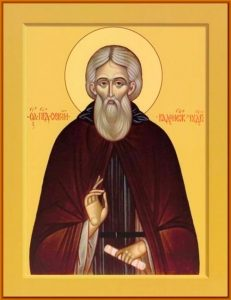

Возбра́нный от Царя́ си́л, Го́спода Иису́са, да́нный Росси́и воево́до и чудотво́рче преди́вный, преподо́бне о́тче Се́ргие! Прославля́юще мы́ просла́вльшаго тя́ сла́вы Го́спода, благода́рственное пе́ние воспева́ем ти́, и́бо моли́твами твои́ми от наше́ствия иноплеме́нник и ско́рбных обстоя́ний на́с при́сно избавля́еши, я́ко име́я дерзнове́ние ко Го́споду, от вся́ких на́с бе́д свободи́, да зове́м ти́:
Ра́дуйся, Се́ргие, ско́рый помо́щниче и пресла́вный чудотво́рче.
А́нгелов Творе́ц, предуве́девый, по самовла́стному чи́стаго се́рдца твоего́ изволе́нию, всеусе́рдствующее Его́ во́ли исполне́ние, еще́ во чре́ве ма́терни трикра́тным возглаше́нием, показа́ тя́ ми́ру и́стиннаго служи́теля бы́ти Святы́я Тро́ицы и научи́ все́х вопи́ти тебе́ си́це:
Ра́дуйся, пре́жде ве́к, я́ко и́маши ве́рный ра́б Христо́в бы́ти, предусмо́тренный; ра́дуйся, во о́ноже вре́мя во блаже́нное и небе́сное жили́ще предуста́вленный.
Ра́дуйся, от чре́ва ма́терня на слу́жбу Небе́снаго Царя́, я́ко во́ин, хотя́щий ве́рен Ему́ бы́ти, призва́нный; ра́дуйся, я́ко благода́тию Бо́жиею оправда́нный.
Ра́дуйся, не то́чию Росси́и, но и все́й вселе́нней просла́вленный; ра́дуйся, трикра́тным твои́м во чре́ве возглаше́нием роди́телей и все́х слы́шащих удиви́вый.
Ра́дуйся, по рожде́нии свое́м по́стное и́ноческое житие́ показа́вый; ра́дуйся, от сосца́ ма́терня воздержа́ние чу́дное яви́вый.
Ра́дуйся, я́ко в сре́ду и пято́к млека́ ника́коже вкуси́вый; ра́дуйся, роди́телей благи́х до́брый и избра́нный пло́де.
Ра́дуйся, ра́дости скорбя́щим и ми́лости с ве́рою у тебе́ прося́щим пода́телю; ра́дуйся, печа́лей злы́х во вся́ких приключе́ниих отгони́телю.
Ра́дуйся, Се́ргие, ско́рый помо́щниче и пресла́вный чудотво́рче.
Ви́дящи вся́ Росси́я и ины́я страны́ да́нною тебе́, преподо́бне о́тче Се́ргие, благода́тию Бо́жиею, с ве́рою к святы́м твои́м моще́м приходя́щим, и ско́рое вспоможе́ние, и при́сное пресла́вное чуде́с творе́ние, удивля́ются. И мы́ вси́, веселя́щеся, я́ко име́ем такова́го ми́лостиваго помо́щника, Просла́вльшаго тя́ прославля́юще и тя́, блага́го раба́ и ве́рнаго слугу́ Госпо́дня, восхваля́юще, вопие́м Ему́: Аллилу́иа.
Ра́зум, еще́ су́щу ти́ во чре́ве ма́терни, Святу́ю Тро́ицу просла́вити Иису́с Христо́с дарова́вый, и ве́ру кре́пкую, наде́жду несумне́нную, любо́вь и́стинную к Нему́ име́ти утверди́вый, сподо́би тя́ во и́мя Святы́я Тро́ицы пресла́вный хра́м и оби́тель чу́дную устро́ити, и во о́ну мно́жество и́нок собра́ти. Сего́ ра́ди ве́рнии научи́шася воспева́ти тебе́ та́ко:
Ра́дуйся, честно́е Пресвяты́я Тро́ицы носи́ло и похвале́ние; ра́дуйся, до́бре ста́до, тобо́ю собра́нное, во спасе́ние наставля́яй.
Ра́дуйся, честны́й о́бразе а́гнцем и па́стырем; ра́дуйся, пра́вило ве́ры и о́бразе кро́тости духо́вныя.
Ра́дуйся, святы́ням чи́стое и непоро́чное жили́ще; ра́дуйся, еще́ при жи́зни сподо́бивыйся ви́дети Пресвяту́ю Богоро́дицу со двема́ апо́столома.
Ра́дуйся, удосто́ивыйся во вре́мя соверше́ния литурги́и сослуже́ния а́нгельскаго; ра́дуйся, во святу́ю литурги́ю в благода́ти Бо́жией ве́сь, а́ки во огни́, стоя́щий.
Ра́дуйся, о́ным Боже́ственным огне́м, в поти́ рвше́дшим, причасти́выйся; ра́дуйся, досто́ин бы́вый а́нгельскаго собесе́дования.
Ра́дуйся, преиспо́лненный вся́кия благосты́ни; ра́дуйся, чистоты́ душе́вныя и теле́сныя усе́рдный храни́телю.
Ра́дуйся, Се́ргие, ско́рый помо́щниче и пресла́вный чудотво́рче.
Си́лою, да́нною ти́ свы́ше, бу́дущая, я́ко настоя́щая, созерца́я, возвеща́л еси́ и вели́кому кня́зю Дими́трию о побе́де многочи́сленных прего́рдых ага́рян, хотя́щих Росси́ю огне́м и мече́м опустоши́ти, проре́кл еси́, и от своего́ и́ноческаго ли́ка дву́х мона́хов на проти́вных в по́мощь да́л еси́, и моли́твою твое́ю свято́ю к Бо́гу вопия́, на ага́ряны побе́ду сотвори́л еси́. За е́же тя́ прославля́юще и о таково́й же твое́й на сопроти́вных правосла́вному во́инству по́мощи прося́ще, Бо́гу вопие́м: Аллилу́иа.
Иму́ще помышле́ние роди́телие твои́ и лю́дие о трикра́тном твое́м во чре́ве ма́тернем в це́ркви глаше́нии и уди́вльшеся, разуме́ша не́что пресла́вное и чу́дное бы́ти: и по си́х уве́девше твое́ ра́достное рожде́ние, ра́довахуся и ра́достная тебе́ приноша́ху, глаго́люще:
Ра́дуйся, отроча́ добродуше́вное и благонаде́жное; ра́дуйся, де́тище, вся́кия благода́ти Бо́жия испо́лненное.
Ра́дуйся, пречу́дное в младе́нчестве по́стничество на́м явля́яй; ра́дуйся, о́ным мно́гих приводя́й во удивле́ние и увеселя́яй.
Ра́дуйся, я́ко с тобо́ю всегда́ бе́ благода́ть Госпо́дня; ра́дуйся, от ю́ности твоея́ все́м се́рдцем и мы́слию Бо́га возлюби́вый.
Ра́дуйся, кро́тость, смире́ние и бде́ние име́вый; ра́дуйся, вся́ ми́ра сего́ кра́сная, я́ко ско́ро исчеза́ющая, презре́вый.
Ра́дуйся, вся́ плотски́я по́хоти Бо́га ра́ди умертви́вый; ра́дуйся, многообра́зныя ко́зни лука́ваго си́лою Бо́жиею победи́вый.
Ра́дуйся, мно́гия лю́ди от грехо́внаго пути́ ко Го́споду обрати́вый и спасы́й; ра́дуйся, я́ко тобо́ю сла́достей духо́вных исполня́емся.
Ра́дуйся, Се́ргие, ско́рый помо́щниче и пресла́вный чудотво́рче.
Бу́ри жития́ ми́ра сего́, при́сно вну́тренними и вне́шними злострада́нии волну́ющагося, преподо́бне о́тче Се́ргие, изба́вився, прише́л еси́ во приста́нище немяте́жное небе́сное, на ме́ста зла́чна и прохла́дна, иде́же пото́цы сла́дости неисповеди́мыя, пи́ща сла́вы Бо́жия нетле́нная, пе́ния и гла́сы пра́зднующих. Та́мо почива́еши и весели́шися, со все́ми а́нгельскими си́лами поя́ Бо́гу: Аллилу́иа.
Слы́шаша, преподо́бне о́тче Се́ргие, бли́жнии и да́льнии ангелоподо́бное твое́ житие́ и благода́ти чуде́с струю́ вы́ну теку́щую, я́ко моли́твою твое́ю прокаже́ннии очища́ются, слепи́и прозира́ют, хро́мии хо́дят и разнообра́зных неду́г с ве́рою притека́ющии здра́вие улуча́ют, си́х изба́вльшеся, вопия́ху к тебе́ такова́я:
Ра́дуйся, мирова́рнице, на вся́ неду́ги врачева́ние подава́ющая; ра́дуйся, безме́здно па́че естества́ врачу́ скороми́лостивый.
Ра́дуйся, ми́лости превели́кия и ско́рбным сострада́ния сокро́вище; ра́дуйся, всеусе́рднаго о лю́дех промышле́ния прия́телище.
Ра́дуйся, ду́шу свою́ за челове́ки положи́ти гото́вый; ра́дуйся, увеселе́ние и отра́да к тебе́ прибега́ющим.
Ра́дуйся, мертвеца́ пресла́вно моли́твою твое́ю оживи́вый; ра́дуйся, оскуде́ние монасты́рское в пи́щи испо́лнивый.
Ра́дуйся, в су́се ме́сте пото́к водны́й тещи́ у Бо́га испроси́вый; ра́дуйся, я́ко та́яжде вода́, моли́твою твое́ю исцеля́ющи неду́ги, чудоде́йствует.
Ра́дуйся, чуде́с пучи́но, Бо́гом излия́нная; ра́дуйся, жела́емых бла́г прише́дшим к тебе́ пода́телю.
Ра́дуйся, Се́ргие, ско́рый помо́щниче и пресла́вный чудотво́рче.
Боготе́чная пресве́тлая звезда́ яви́лся еси́, преподо́бне о́тче Се́ргие, не́бо церко́вное украша́яй и все́х блудя́щих по мо́рю стра́стнаго жития́ сего́ да́нною тебе́ от Со́лнца Пра́вды Христа́ Иису́са, и́стиннаго Бо́га, благода́тию озаря́яй, мра́к печа́лей и мглу́ вся́ких неду́г и скорбе́й прогоня́яй, наставля́еши все́х к тебе́ с ве́рою притека́ющих на пу́ть спасе́ния, к ве́чному Небе́сному Оте́честву веду́щий, пою́щих Бо́гу: Аллилу́иа.
Ви́дев преподо́бный Се́ргий, я́ко в ми́ре се́м вся́ческая суета́ и тле́нию прича́стна, потща́ся вседу́шно Преве́чному Бо́гу благоугоди́ти, и вои́стину не вотще́ потруди́ся: премени́ бо тле́нная на нетле́нная, наипа́че же предстоя́ния сподо́бися у стра́шнаго Престо́ла Влады́чня в сла́ве ве́чней. Те́мже вопие́м ему́:
Ра́дуйся, я́ко иде́же Христо́с в телеси́, та́можде и ты́ пребыва́еши; ра́дуйся, та́мо, я́ко в зерца́ле, в Бо́зе вся́ Ему́ любе́зная созерца́еши.
Ра́дуйся, я́ко созерца́я в Не́м моля́щихся ти́ о по́мощи, моли́твою твое́ю и́м поле́зная хода́тайствуеши; ра́дуйся, ско́рый помо́щниче призыва́ющим тя́ во бране́х правосла́вным.
Ра́дуйся, моли́твою твое́ю Росси́йстей стране́ побе́ды на проти́вныя подава́яй; ра́дуйся, скорбя́щим скоропредста́тельный уте́шителю.
Ра́дуйся, не́мощей теле́сных и душе́вных немздоприе́мный исцели́телю; ра́дуйся, мно́гая чудеса́ благода́тию Ду́ха Свята́го содева́яй.
Ра́дуйся, хромы́м хожде́ние и слепы́м прозре́ние подава́яй; ра́дуйся, гро́зд ви́нный, пита́ющий на́с и веселя́щий.
Ра́дуйся, розго́ Христа́ лозы́ и́стинныя, мно́г пло́д в посо́бие правосла́вным творя́щая; ра́дуйся, благи́й ра́бе и ве́рный, и до́брый де́лателю виногра́да Христо́ва.
Ра́дуйся, Се́ргие, ско́рый помо́щниче и пресла́вный чудотво́рче.
Пропове́дует держа́ва Росси́йская, богому́дре Се́ргие, труды́ твоя́ и боле́зни, бде́ние же и сухояде́ние, ра́ди душе́внаго твоего́ спасе́ния подъя́тыя, его́же ра́ди просла́ви тя́ Госпо́дь сла́вою Свое́ю Боже́ственною. Те́мже, я́ко ра́й насажде́нный, в Це́ркви яви́лся еси́, иму́щи дре́во жи́зни Сама́го Го́спода, от Него́же вкуси́вшии вся́ ско́ро ги́бнущая в ми́ре се́м презира́ют и ра́достно в прекра́сный виногра́д вы́шний вхо́дят, иде́же ты́, предстоя́ Ему́, вопие́ши: Аллилу́иа.
Возсия́ Це́ркви и стране́ на́шей Росси́йстей просвеще́ние соверше́нных твои́х доброде́телей, преподо́бне о́тче Се́ргие, о ни́хже благодаря́ще Отца́ Небе́снаго, да́вшаго тебе́ толи́кую благода́ть вели́чия Своего́, к тебе́, я́ко к те́плому о на́с моли́твеннику, ра́достная воспева́ем та́ко:
Ра́дуйся, а́нгельское житие́ на́м явля́яй; ра́дуйся, стра́сти грехо́вныя уставля́яй.
Ра́дуйся, о́бразе и́стиннаго смире́ния; ра́дуйся, зерца́ло соверше́ннаго терпе́ния.
Ра́дуйся, наста́вниче вели́кий спасе́нию; ра́дуйся, приводя́й гре́шных ко исправле́нию.
Ра́дуйся, изве́стный исполни́телю за́поведей Христо́вых; ра́дуйся, ду́ш немощны́х исцеле́ние.
Ра́дуйся, ми́лостыню твори́ти науча́яй; ра́дуйся, ри́зы и бра́шна немощны́м подава́ти повелева́яй.
Ра́дуйся, пусты́нниче, мирску́ю че́сть и бога́тство возненави́девый; ра́дуйся, по́стниче, от ю́ности Бо́гу послужи́вый.
Ра́дуйся, Се́ргие, ско́рый помо́щниче и пресла́вный чудотво́рче.
Хотя́ избра́н до́м Ду́ху Свято́му себе́ сотвори́ти, потща́лся еси́ те́сным и приско́рбным путе́м, веду́щим в жи́знь ве́чную, взе́м на ра́мо свое́ Кре́ст Христо́в, ше́ствовати, е́же благода́тию Бо́жиею от ю́ности твоея́ непоро́чно в творе́ниих за́поведей Госпо́дних соверши́в, дости́гл еси́ угото́ваннаго тебе́ в небе́сном всевесе́лом пребыва́нии воздая́ния, и та́мо благода́рственно пое́ши Бо́гу: Аллилу́иа.
Но́вую благода́ть показа́ все́х Творе́ц и Влады́ка тебе́, богому́дре Се́ргие: а́ще бо и у́мерл еси́ на земли́ пло́тию, но душе́ю в вы́шнем селе́нии всегда́ жи́в сы́й, мно́гая и пресла́вная чудеса́ в ми́ре живу́щим лю́дем де́йствуеши, и те́плым твои́м хода́тайством посо́бствуеши, вопию́щим к тебе́ такова́я:
Ра́дуйся, де́вственниче душе́ю и те́лом; ра́дуйся, и́ноком наста́вниче преди́вный.
Ра́дуйся, ду́ш на́ших ра́дование; ра́дуйся, бы́строе ни́щим услы́шание.
Ра́дуйся, скорбя́щим прия́тное попече́ние; ра́дуйся, чистоты́ усе́рдный храни́телю.
Ра́дуйся, ненаде́жным наде́яние; ра́дуйся, всея́ Росси́и увеселе́ние.
Ра́дуйся, дре́во чудото́чное рая́ Иису́сова; ра́дуйся, кри́не ра́йскаго прозябе́ния.
Ра́дуйся, ми́ро Христо́ва благоуха́ния; ра́дуйся, я́ко тобо́ю прино́сится ра́дование.
Ра́дуйся, Се́ргие, ско́рый помо́щниче и пресла́вный чудотво́рче.
Стра́нное и пресла́вное чу́до явля́ется притека́ющим к тебе́, богому́дре Се́ргие: и́бо да́нною тебе́ Бо́жиею благода́тию с ве́рою прося́щим неме́дленно от вся́ких многообра́зных теле́сных и душе́вных скорбе́й исцеля́еши, от бе́д избавля́еши, от напа́стей охраня́еши, и все́м вся́ко благополе́зное проше́ние исполня́еши, и вопие́ши Бо́гу: Аллилу́иа.
Ве́сь еси́, преподо́бне о́тче Се́ргие, в вы́шних, но и ни́жних не оставля́еши: при́сно со Христо́м Царе́м Ве́чным ца́рствуеши и на́с, гре́шных и недосто́йных, пред Ни́м воспомина́еши, моля́ся о спасе́нии на́шем. Те́мже от усе́рдия на́шего вопие́м к тебе́ си́це:
Ра́дуйся, оста́вльший име́ние и возлюби́вый нищету́ Христо́ву; ра́дуйся, дости́гший к неистощи́мому бога́тству.
Ра́дуйся, Ду́ху Свято́му подклони́выйся со вся́ким смире́нием; ра́дуйся, во́ине Христо́в непобеди́мый я́вльшийся.
Ра́дуйся, крило́ма богомы́слия се́ти вра́жия сокруши́вый; ра́дуйся, смире́нием возвыша́емый, в ве́чныя кро́вы возлете́вый.
Ра́дуйся, просвеще́нный вну́трь благода́тию; ра́дуйся, истреби́вый страсте́й мглу́ душевре́дную.
Ра́дуйся, в по́двизех дневны́х и нощны́х тече́ние соверши́вый; ра́дуйся, в невече́рнем дни́ Ца́рствия Бо́жия при́сно почива́яй.
Ра́дуйся, та́мо снеде́ния пи́щи разу́мныя сподо́бльшийся; ра́дуйся, я́ко того́ блаже́нства от Бо́га ве́чно удосто́ивыйся.
Ра́дуйся, Се́ргие, ско́рый помо́щниче и пресла́вный чудотво́рче.
Вся́кое естество́ а́нгельское удиви́ся вели́кому свы́ше тебе́ дарова́нию, я́ко на земли́ невеще́ственное житие́ показа́л еси́, и во пло́ти, а́ки безпло́тен, яви́лся еси́. Сего́ ра́ди мно́гих чуде́с творе́ния от Го́спода прие́м, чи́стою и боголюбе́зною душе́ю твое́ю Того́ бла́гостию к Небе́сным причте́н еси́ си́лам, в Небесе́х ны́не пое́ши всеси́льному Бо́гу: Аллилу́иа.
Вити́и многовеща́ннии недоуме́ют досто́йно сла́вити тя́, досто́йный вся́кия сла́вы, сла́вне преподо́бне о́тче Се́ргие, и́бо пачеесте́ственная мно́гая пресла́вная чудоде́йствия, еще́ жи́в су́щь, показа́л еси́, но и по сме́рти та́я благода́тию Бо́жиею твори́ти не престае́ши. Мы́ же, любо́вию понужда́еми, дерза́ем пе́ти тебе́ си́це:
Ра́дуйся, земны́й а́нгеле и небе́сный челове́че; ра́дуйся, во пло́ти живы́й духо́вно, на земли́ небе́сно.
Ра́дуйся, в челове́честве пребыва́яй а́нгельски, в ми́ре преми́рно; ра́дуйся, душе́вныма твои́ма очи́ма вы́ну Го́спода созерца́вый.
Ра́дуйся, пред лице́м Бо́жиим, я́ко ра́б пред Го́сподем, ходи́вый; ра́дуйся, пред О́ным, я́ко сы́н пред Отце́м, я́ко учени́к пред Учи́телем, ше́ствовавый.
Ра́дуйся, я́ко во́ин пред Воево́дою гото́в сы́й вся́ повеле́нная И́м твори́ти; ра́дуйся, до́брый ста́да своего́ и́ночествующих наста́вниче и прави́телю.
Ра́дуйся, ше́ствовавый от си́лы в си́лу, до́ндеже яви́ся тебе́ Бо́г бого́в в Сио́не; ра́дуйся, Еди́наго Го́спода возлюби́вый и к Нему́ очеса́ своя́ вы́ну име́вый.
Ра́дуйся, во вся́ дни́ живота́ своего́ Его́ иска́вый и в Не́м наме́рение полага́вый; ра́дуйся, ничесого́ на Небеси́ и на земли́, ра́зве Христа́ Иису́са, ви́дети жела́вый.
Ра́дуйся, Се́ргие, ско́рый помо́щниче и пресла́вный чудотво́рче.
Спасти́ хотя́ ду́шу твою́, в ю́ности во́зраста своего́ отре́клся еси́ во́ли своея́ и во зна́мение отсече́ния ея́ постри́гл еси́ власы́ главы́ своея́, и бы́л еси́ мона́х, покори́вый себе́ во́ли Бо́жией и нача́льником, от Него́ поста́вленным, и́хже веле́ния та́ко слу́шал еси́, я́ко Самаго́ Го́спода, никогда́ же прекосло́вя, но сло́ву веле́ния исполне́нием де́ла отвещава́я. Вся́ческая же приключе́ния благода́рно, я́ко ве́рный ра́б, от Го́спода приима́л еси́, Ему́же на Небесе́х предстоя́, ны́не вопие́ши: Аллилу́иа.
Стена́ еси́ все́м челове́ком, к заступле́нию твоему́ прибега́ющим, преподо́бне богому́дре Се́ргие. Те́мже и на́м, к тебе́ приходя́щим и ми́лостиваго твоего́ во вся́ких ну́ждах заступле́ния у Царя́ Небе́снаго прося́щим, бу́ди стена́ кре́пкая и огражде́ние непреобори́мое, от вся́ких на́с бе́д и напа́стей застеня́я и огражда́я, за е́же мы́ вопие́м тебе́ такова́я:
Ра́дуйся, во́ине Царя́ Небе́снаго, не обяза́выйся ку́плями жите́йскими, да Ему́ уго́ден бу́деши; ра́дуйся, не восхоте́вый двема́ господи́нома, Бо́гу и ми́ру, рабо́тати, но Еди́ному Бо́гу то́чию.
Ра́дуйся, от ю́ности на те́ло свое́, на ми́ рсе́й и диа́вола вооружи́выйся; ра́дуйся, посто́м, покло́ны, стоя́нием на моли́тве, бде́нием умертви́вый пло́ть свою́.
Ра́дуйся, умертви́вый о́ную пре́жде, не́жели она́ жи́ва страсте́м бя́ше; ра́дуйся, ме́ртву соде́явый горта́нь проти́ву приима́ния сласте́й.
Ра́дуйся, ме́ртв сотвори́вый язы́к проти́ву глаго́лания скве́рных, клеветны́х и ло́жных; ра́дуйся, ме́ртвы устро́ивый ушеса́ проти́ву слы́шания душевре́дных.
Ра́дуйся, ме́ртвы соде́явый ру́це проти́ву грабле́ния и вся́ких зо́л творе́ния; ра́дуйся, ме́ртво сотвори́вый чре́во проти́ву объяде́ния и пия́нства.
Ра́дуйся, ме́ртва соде́лавый труда́ми чре́сла своя́ проти́ву нечистоты́; ра́дуйся, ме́ртвы сотвори́вый но́зе проти́ву тече́ния в пу́ть гре́шников и на сове́т нечести́вых.
Ра́дуйся, Се́ргие, ско́рый помо́щниче и пресла́вный чудотво́рче.
Пе́ние благода́рственное благотвори́телю Христу́ Иису́су, тя́, преподо́бне о́тче, прославля́юще, вси́ правосла́внии взыва́ют, я́ко дарова́л ти́ мно́гих чуде́с си́лу творе́ния: слепы́я просвеща́ти, прокаже́нныя очища́ти, больны́я врачева́ти, бесны́я от де́монскаго друче́ния свобожда́ти, толи́ко си́льне, я́коже и не у приведе́нным к тебе́ бы́вшим бесны́м, еще́ на пути́ де́мони от ни́х отбега́ху и ктому́ не возвраща́хуся, боя́щеся в тебе́ си́лы Бо́жия, ю́же вы́ну в Небесе́х прославля́я, вопие́ши Бо́гу: Аллилу́иа.
Светоза́рное свети́ло в правосла́вной Росси́йстей держа́ве и во все́й вселе́нней благода́тию немерца́ющаго Со́лнца, Христа́ Иису́са, просвеща́ющею возсия́вшее, зри́м тя́, богому́дре о́тче: с невеще́ственными бо в вы́шних предстоя́ Престо́лу Тро́ицы Пресвяты́я, ра́дости превели́кия испо́лнен еси́ и Боже́ственными луча́ми Трисо́лнечнаго Све́та осиява́емь, облиста́еши ве́рныя, вопию́щия к тебе́ такова́я:
Ра́дуйся, возше́дый на го́ру превысоку́ доброде́телей Боже́ственных; ра́дуйся, я́ко от тоя́ удо́бь возше́л еси́ на го́ру небе́сную.
Ра́дуйся, я́ко от оби́тели земны́я во оби́тель небе́сную водвори́лся еси́; ра́дуйся, я́ко восходя́ та́мо душе́ю, на́м мо́щи твоя́ святы́я оста́вил еси́.
Ра́дуйся, я́ко мо́щи твоя́ исцелева́ют вся́кия ско́рби и боле́зни; ра́дуйся, я́ко моще́й твои́х де́мони трепе́щут.
Ра́дуйся, я́ко твоя́ мо́щи кому́ждо в приклю́чшихся печа́лех быва́ют увеселе́ние; ра́дуйся, душе́ю востеки́й в Сио́н Го́рний к Царю́ Небе́сному.
Ра́дуйся, я́ко та́мо предстоя́, о все́х к Нему́ те́пле хода́тайствуеши; ра́дуйся, я́ко благоутро́бие Его́ о все́х чту́щих па́мять твою́ умилостивля́еши.
Ра́дуйся, стране́ на́шей на проти́вных побе́ду моли́твою твое́ю содева́еши; ра́дуйся, все́м ве́рным вся́кое проше́ние во и́х по́льзу исполня́еши.
Ра́дуйся, Се́ргие, ско́рый помо́щниче и пресла́вный чудотво́рче.
Благода́ть, да́нную ти́ от Бо́га, све́дуще, тебе́, при́снаго на́шего ми́лостиваго отца́, приле́жно про́сим: проле́й ны́не те́плую твою́ моли́тву о на́с, гре́шных, ко Го́споду, я́ко да презре́в вся́ на́ша согреше́ния, да́рует побе́ды на враги́, я́ко царю́ Константи́ну на Максе́нтиа, я́ко Дави́ду на Голиа́фа; держа́ву Росси́йскую да укрепи́т, Це́рковь Свою́ Святу́ю от ра́спрей и раско́лов непозы́блему да сохрани́т, оби́лие вся́ких плодо́в земли́ да да́рует и вся́ правосла́вныя христиа́ны да спасе́т и поми́лует, чесого́ от Него́ твои́ми моли́твами улучи́ти ожида́юще, вопие́м Ему́: Аллилу́иа.
Пою́ще ди́внаго во святы́х Свои́х Царя́ Небе́снаго, просла́вльшаго тя́, ве́рнаго Своего́ раба́, преподо́бнаго отца́ Се́ргия, ми́лостивое твое́, ско́рое на́м во вся́ких ну́ждах и печа́лех поможе́ние прославля́ем, и́бо в тебе́ в Тро́ице прославля́емый Бо́г на́ш пресла́вным мно́гим чудоде́йствием ди́вно просла́вися, о чесо́м удивля́ющеся вопие́м к тебе́ си́це:
Ра́дуйся, великосла́вный Росси́йский на́ш засту́пниче, о́тче Се́ргие; ра́дуйся, соверше́нный в доброде́телех челове́че.
Ра́дуйся, ди́вный подража́телю соверше́нства Отца́ на́шего Небе́снаго; ра́дуйся, преблаги́й и до́брый наста́вниче и́ноков.
Ра́дуйся, о́бразе пустынножи́телей и устрои́телю о́бщаго жития́; ра́дуйся, все́х правосла́вных ско́рый помо́щниче и засту́пниче.
Ра́дуйся, Царя́ Небе́снаго и Бо́га изве́стный умилостиви́телю; ра́дуйся, мно́гажды заступле́нием твои́м проше́ния предваря́яй.
Ра́дуйся, покро́ве, Бо́гом зда́нный, и́мже покрыва́ются мно́зи; ра́дуйся, лени́вых подви́гнувый твои́ми христоподража́тельными нра́вы.
Ра́дуйся, доброзра́чное све́та ева́нгельскаго всесве́тлое сия́ние; ра́дуйся, Трисо́лнечнаго Святы́я Тро́ицы све́та вы́ну просвеща́ющее озаре́ние.
Ра́дуйся, Се́ргие, ско́рый помо́щниче и пресла́вный чудотво́рче.
О чудотво́рче пресла́вный и засту́пниче все́м на́м во вся́ких беда́х и ско́рбех ско́рый и пречу́дный, богому́дре о́тче Се́ргие! Ны́нешнее на́ше приими́ приноше́ние и богоприя́тным твои́м хода́тайством умоли́ Го́спода си́л си́лу свы́ше правосла́вному на́шему во́инству на сопроти́вныя пода́ти, и на́м все́м, Того́ благода́тию очи́стившимся, от гее́нны изба́витися, и гряду́щая в Небесе́х блага́я улучи́ти, вопию́щим Ему́: Аллилу́иа.
Этот конда́к читается трижды
А́нгелов Творе́ц, предуве́девый, по самовла́стному чи́стаго се́рдца твоего́ изволе́нию, всеусе́рдствующее Его́ во́ли исполне́ние, еще́ во чре́ве ма́терни трикра́тным возглаше́нием, показа́ тя́ ми́ру и́стиннаго служи́теля бы́ти Святы́я Тро́ицы и научи́ все́х вопи́ти тебе́ си́це:
Ра́дуйся, пре́жде ве́к, я́ко и́маши ве́рный ра́б Христо́в бы́ти, предусмо́тренный; ра́дуйся, во о́ноже вре́мя во блаже́нное и небе́сное жили́ще предуста́вленный.
Ра́дуйся, от чре́ва ма́терня на слу́жбу Небе́снаго Царя́, я́ко во́ин, хотя́щий ве́рен Ему́ бы́ти, призва́нный; ра́дуйся, я́ко благода́тию Бо́жиею оправда́нный.
Ра́дуйся, не то́чию Росси́и, но и все́й вселе́нней просла́вленный; ра́дуйся, трикра́тным твои́м во чре́ве возглаше́нием роди́телей и все́х слы́шащих удиви́вый.
Ра́дуйся, по рожде́нии свое́м по́стное и́ноческое житие́ показа́вый; ра́дуйся, от сосца́ ма́терня воздержа́ние чу́дное яви́вый.
Ра́дуйся, я́ко в сре́ду и пято́к млека́ ника́коже вкуси́вый; ра́дуйся, роди́телей благи́х до́брый и избра́нный пло́де.
Ра́дуйся, ра́дости скорбя́щим и ми́лости с ве́рою у тебе́ прося́щим пода́телю; ра́дуйся, печа́лей злы́х во вся́ких приключе́ниих отгони́телю.
Ра́дуйся, Се́ргие, ско́рый помо́щниче и пресла́вный чудотво́рче.
Возбра́нный от Царя́ си́л, Го́спода Иису́са, да́нный Росси́и воево́до и чудотво́рче преди́вный, преподо́бне о́тче Се́ргие! Прославля́юще мы́ просла́вльшаго тя́ сла́вы Го́спода, благода́рственное пе́ние воспева́ем ти́, и́бо моли́твами твои́ми от наше́ствия иноплеме́нник и ско́рбных обстоя́ний на́с при́сно избавля́еши, я́ко име́я дерзнове́ние ко Го́споду, от вся́ких на́с бе́д свободи́, да зове́м ти́:
Ра́дуйся, Се́ргие, ско́рый помо́щниче и пресла́вный чудотво́рче.
О свяще́нная главо́, преподо́бне и Богоно́сне о́тче на́ш Се́ргие, моли́твою твое́ю, и ве́рою, и любо́вию, я́же к Бо́гу, и чистото́ю се́рдца, еще́ на земли́ во оби́тель Пресвяты́я Тро́ицы ду́шу твою́ устро́ивый, и а́нгельскаго обще́ния и Пресвяты́я Богоро́дицы посеще́ния сподо́бивыйся, и да́ рчудоде́йственныя благода́ти прие́мый, по отше́ствии же твое́м от земны́х наипа́че к Бо́гу прибли́живыйся, и небе́сныя си́лы приобщи́выйся, но и от на́с ду́хом любве́ своея́ не отступи́вый, и честны́я твоя́ мо́щи, я́ко сосу́д благода́ти по́лный и преизлива́ющийся, на́м оста́вивый! Ве́лие име́я дерзнове́ние ко Всеми́лостивому Влады́це, моли́ спасти́ рабы́ Его́, су́щей в тебе́ благода́ти Его́ ве́рующия и к тебе́ с любо́вию притека́ющия. Испроси́ на́м от Великодарови́таго Бо́га на́шего вся́кий да́р, все́м и коему́ждо благопотре́бен, ве́ры непоро́чны соблюде́ние, градо́в на́ших утвержде́ние, ми́ра умире́ние, от гла́да и па́губы избавле́ние, от наше́ствия иноплеме́нных сохране́ние, скорбя́щим утеше́ние, неду́гующим исцеле́ние, па́дшим возставле́ние, заблужда́ющим на пу́ть и́стины и спасе́ния возвраще́ние, подвиза́ющимся укрепле́ние, благоде́лающим в дела́х благи́х преуспе́яние и благослове́ние, младе́нцем воспита́ние, ю́ным наставле́ние, неве́дущим вразумле́ние, сирота́м и вдови́цам заступле́ние, отходя́щим от сего́ вре́меннаго жития́ к ве́чному благо́е уготовле́ние и напу́тствие, отше́дшим блаже́нное упокое́ние, и вся́ ны́ споспешеству́ющими твои́ми моли́твами сподо́би в де́нь Стра́шнаго суда́ шу́ия ча́сти изба́витися, десны́я же страны́ о́бщники бы́ти и блаже́нный о́ный гла́с Влады́ки Христа́ услы́шати: прииди́те, благослове́ннии Отца́ Моего́, насле́дуйте угото́ванное ва́м ца́рствие от сложе́ния ми́ра. Ами́нь.
О свяще́нная главо́, преподо́бне о́тче, преблаже́нне а́вво Се́ргие вели́кий! Не забу́ди убо́гих свои́х до конца́, но помина́й на́с во святы́х свои́х и благоприя́тных моли́твах к Бо́гу. Помяни́ ста́до свое́, е́же са́м упа́сл еси́, и не забу́ди посеща́ти ча́д свои́х. Моли́ за ны́, о́тче свяще́нный, за де́ти своя́ духо́вныя, я́ко име́я дерзнове́ние к Небе́сному Царю́, не премолчи́ за ны́ ко Го́споду и не пре́зри на́с, ве́рою и любо́вию чту́щих тя́. Помина́й на́с, недосто́йных, у престо́ла Вседержи́телева, и не преста́й моля́ся о на́с ко Христу́ Бо́гу, и́бо дана́ тебе́ бы́сть благода́ть за ны́ моли́тися. Не мни́м бо тя́ су́ща ме́ртва: а́ще бо и те́лом преста́вился еси́ от на́с, но и по сме́рти жи́в сы́й пребыва́еши. Не отступа́й от на́с ду́хом, сохраня́я на́с от стре́л вра́жиих, и вся́кия пре́лести бесо́вския, и ко́зней диа́вольских, па́стырю на́ш до́брый; а́ще бо и моще́й твои́х ра́ка пред очи́ма на́шима ви́дима е́сть всегда́, но свята́я твоя́ душа́ со а́нгельскими во́инствы, со безпло́тными ли́ки, с Небе́сными си́лами, у престо́ла Вседержи́теля предстоя́щи, досто́йно весели́тся. Ве́дуще бо тя́ вои́стину и по сме́рти жи́ва су́ща, тебе́ припа́даем и тебе́ мо́лимся, е́же моли́тися о на́с Всеси́льному Бо́гу о по́льзе ду́ш на́ших, и испроси́ти вре́мя на покая́ние, и о невозбра́нном преи́тии от земли́ на Не́бо, мыта́рств же го́рьких, бесо́в, возду́шных князе́й и ве́чныя му́ки изба́витися, и Небе́сному Ца́рствию насле́дником бы́ти со все́ми пра́ведными, от ве́ка угоди́вшими Го́споду на́шему Иису́су Христу́, Ему́же подоба́ет вся́кая сла́ва, че́сть и поклоне́ние со Безнача́льным Его́ Отце́м и с Пресвяты́м, и Благи́м, и Животворя́щим Его́ Ду́хом ны́не, и при́сно, и во ве́ки веко́в. Ами́нь.
О Небе́снаго граждани́не Иерусали́ма, преподо́бне о́тче Се́ргие! Воззри́ на на́с ми́лостиво и к земли́ приве́рженных возведи́ к высоте́ Небе́сней. Ты́ горе́ на Небеси́; мы́, на земли́ ни́зу, удалены́ от тебе́ не толи́ко ме́стом, ели́ко греха́ми свои́ми и беззако́ниями; но к тебе́, я́ко на́м сро́дному, прибега́ем и взыва́ем: наста́ви на́с ходи́ти путе́м твои́м, вразуми́ и руково́дствуй. Сво́йственно е́сть тебе́, о́тче на́ш, благоутро́бие и человеколю́бие: на земли́ живу́щу, не о свое́м то́кмо спасе́нии бы́сть тебе́ попече́ние, но и о все́х к тебе́ притека́ющих. Наставле́ния твоя́ бы́ша тро́стию кни́жника скоропи́сца, на се́рдце ка́ждаго глаго́лы жи́зни начертава́ющаго. Не теле́сныя то́кмо врачева́л еси́ боле́зни, но па́че душе́вных вра́ч изя́щный яви́лся еси́; и вся́ твоя́ свята́я жи́знь бы́сть зерца́лом вся́кия доброде́тели. А́ще толи́к бы́л еси́, свя́тче Бо́жий, на земли́, коли́к ны́не еси́, на Небеси́! Ты́ дне́сь предстои́ши Престо́лу Све́та Непристу́пнаго и в не́м, я́ко в зерца́ле, зри́ши вся́ на́ша ну́жды и проше́ния; ты́ водворя́ешися вку́пе со А́нгелы, о еди́ном гре́шнице ка́ющемся ра́дующимися. И человеколю́бие Бо́жие е́сть неистощи́мо, и твое́ к Нему́ дерзнове́ние мно́го, не преста́ни о на́с вопия́ ко Го́споду. Испроси́ предста́тельством свои́м у Всеми́лостиваго Бо́га на́шего ми́ рЦе́ркви Его́, под зна́мением креста́ во́инствующей, согла́сие в ве́ре и единому́дрие, суему́дрия же и раско́лов истребле́ние, утвержде́ние во благи́х де́лех, больны́м исцеле́ние, печа́льным утеше́ние, оби́женным заступле́ние, бе́дствующим по́мощь. Не посрами́ на́с, к тебе́ с ве́рою притека́ющих. А́ще бо и недосто́йни есмы́ толи́каго отца́ и хода́тая, но ты́, бы́в подража́тель человеколю́бия Бо́жия, сотвори́ на́с досто́йны чрез обраще́ние от злы́х де́л к благо́му житию́. Вся́ богопросвеще́нная Росси́я, твои́ми чудесы́ испо́лненная и ми́лостьми облагоде́тельствованная, испове́дует тя́ бы́ти своего́ покрови́теля и засту́пника. Яви́ дре́вния ми́лости твоя́ и и́хже отце́м спомоществова́л еси́, не отри́ни и на́с, ча́д и́х, стопа́ми и́х к тебе́ ше́ствующих. Ве́руем, я́ко ду́хом на́м сопрису́тствуеши. Иде́же бо е́сть Госпо́дь, я́коже сло́во Его́ учи́т на́с, та́мо и слуга́ Его́ бу́дет. Ты́ ве́рный еси́ ра́б Госпо́день, и Бо́гу везде́ су́щу, ты́ в Не́м еси́, и О́н в тебе́ е́сть, па́че же и те́лом с на́ми еси́. Се́ нетле́нныя и живоно́сныя твоя́ мо́щи, я́ко сокро́вище безце́нное, вручи́ на́м чуде́с Бо́г. Предстоя́ще и́м, я́ко тебе́ жи́ву су́щу, припа́даем и мо́лимся: приими́ моле́ния на́ша и вознеси́ и́х на же́ртвенник благоутро́бия Бо́жия, да прии́мем тобо́ю благода́ть и благовре́менну в ну́ждах на́ших по́мощь. Укрепи́ на́ше малоду́шие и утверди́ на́с в ве́ре, да несомне́нно упова́ем получи́ти вся́ блага́я от благосе́рдия Влады́ки моли́твами твои́ми. Па́ству же твою́ духо́вную, тобо́ю со́бранную, не преста́ни управля́ти жезло́м духо́вныя му́дрости: подвиза́ющимся помози́, разсла́бленных возста́ви, споспеши́ и́го Христо́во нести́ во благоду́шии и терпе́нии и все́х на́с упра́ви в ми́ре и покая́нии сконча́ти живо́т на́ш и пресели́тися со упова́нием в блаже́нная не́дра Авраа́мова, иде́же ты́ ра́достно по труде́х и по́двизех ны́не почива́еши, прославля́я со все́ми святы́ми Бо́га, в Тро́ице сла́вимаго, Отца́ и Сы́на и Свята́го Ду́ха. Ами́нь.
☧